01
Hero Banner · 捲動集中
scroll-driven參考來源
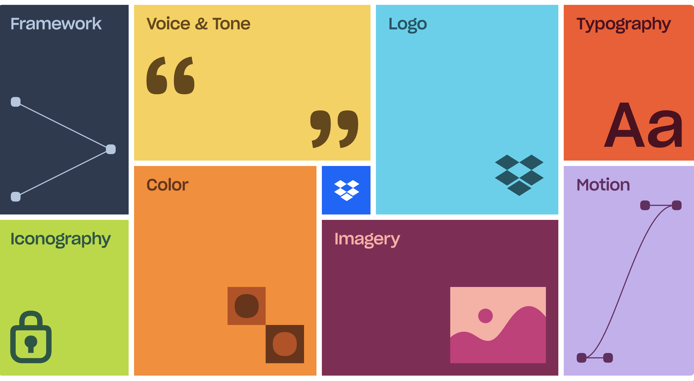
→
我們的對應區塊
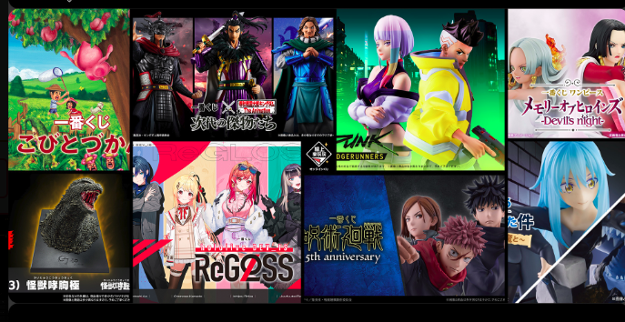
- 想做的效果滑鼠下捲 → 左右兩側的一番賞商品圖從邊緣往中央 Logo 集中收斂
- 觸發方式scroll-driven，scrub 跟著捲軸進度走（非自動播放）
- 動畫長度約 100vh 內完成集中，集中後維持滿版商品牆狀態
- 進入方向左半邊商品由左側滑入、右半邊商品由右側滑入，可加微量 opacity 和 scale 漸變
- 緩動曲線
ease-out或 GSAPpower2.out（前段快、後段緩） - 技術方案CSS
animation-timeline: view()（純 CSS）或 GSAP ScrollTrigger - Demo/hero-demo.html（待製作 — 用實際商品圖跑一次給設計看）
02
新製品列表 · 卡片向上堆疊
scroll-stack參考來源
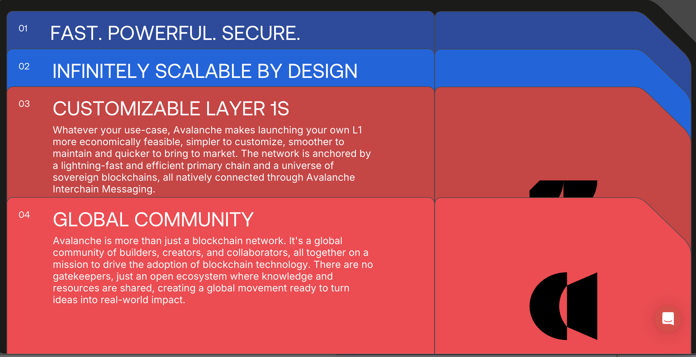
→
我們的對應區塊
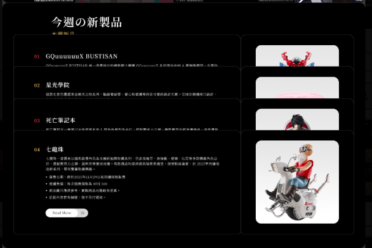
- 想做的效果下捲時 01 → 02 → 03 → 04 商品卡一張一張從下方滑入，堆疊在前一張之上（後進覆蓋前進）
- 觸發方式scroll-driven，section 進入視窗時 pin 住，捲動進度推進卡片切換
- 動畫長度每張卡約 60~80vh，整段 section 約 320~400vh（4 張）
- 進入方向由下往上
translateY(80% → 0)，可加細微 scale (0.96 → 1) 與 opacity (0 → 1) - 緩動曲線
ease-out或 GSAPpower3.out（落定有重量感） - 堆疊邏輯切到下一張時，前一張保持原位（z-index 較低），新卡覆蓋上去，產生「疊牌」視覺
- 技術方案GSAP ScrollTrigger + pin + timeline（建議，動畫掌控度高）／或 CSS sticky +
animation-timeline: view() - Demo/new-products-demo.html（待製作）
03
獎品三卡 · 錯落補齊到同排
scroll-stagger參考來源
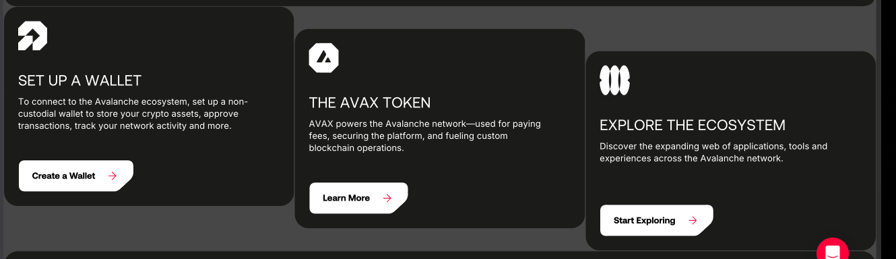
→
我們的對應區塊
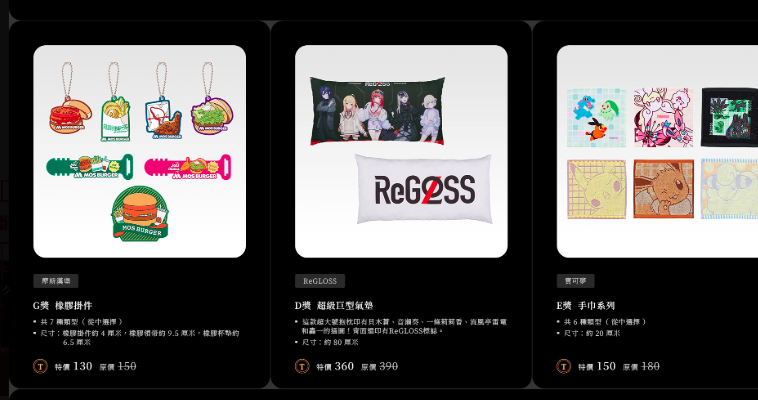
- 想做的效果進入視窗時三張卡呈高低錯落（例：左 +120px / 中 0 / 右 +80px），下捲時三張同步歸位到同一水平線
- 觸發方式scroll-driven，section 進入視窗 30% 時開始，捲到 80% 完成補齊
- 動畫長度單一 section 內完成（約 50~70vh）
- 初始位移三卡分別給不同
translateY起始值，目標統一為0；可搭配 opacity 0.7 → 1 - 緩動曲線
ease-out或 GSAPpower2.out（落地感不要太硬） - 進入順序可同時補齊；若要更有層次可加
stagger 0.1~0.15s - 技術方案CSS
animation-timeline: view()（純 CSS、效能佳）／或 GSAP ScrollTrigger（控制更細） - Demo/prizes-three-demo.html（待製作）
04
商城品牌列 · 自動移動 + Hover 高亮
marquee + hover ⚠ 待評估參考來源
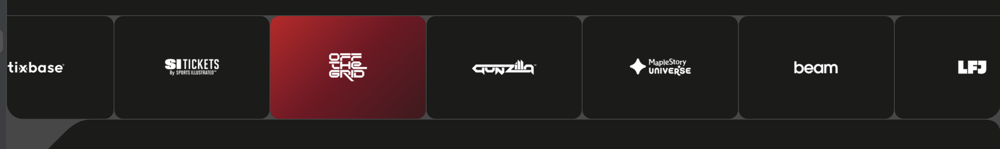
→
我們的對應區塊
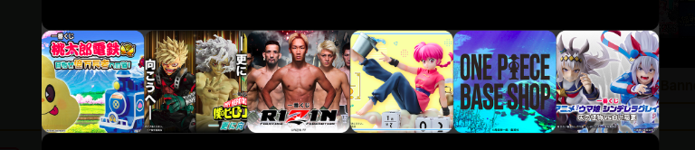
- 想做的效果商品列自動水平移動，滑鼠 hover 某張卡片時高亮（avax 是變紅色）
- 觸發方式頁面載入即開始 marquee；hover 觸發顏色變化 + 暫停移動
- 移動速度建議 30~50s 走完一輪，配
linear緩動避免頓點 - 無縫迴圈List 內容複製 2 份首尾相接，動畫到一半時 reset，視覺上無接縫
- 技術方案純 CSS
@keyframes+transform: translateX()（最輕量）／或 GSAPInfiniteMarquee工具
- ⚠ 評估點 1avax 是單色 logo（黑底白字），hover 整張轉紅高度突出；日日欣是全彩 IP 商品照，本身視覺資訊量已高，hover「整張變色」可能畫面過載
- ⚠ 評估點 2自動移動 + 全彩商品照會「持續搶眼」，跟首頁其他區塊競爭注意力，不易讓使用者聚焦
- 建議替代① 保留自動移動，hover 改為「暫停 + 放大 1.05x + 金色描邊」（不變色） ② 或改為靜態 grid + hover 才放大（不用 marquee）
05
最新消息 · Carousel 左右滑動
carousel參考來源
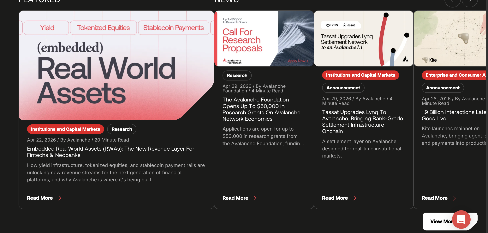
→
我們的對應區塊
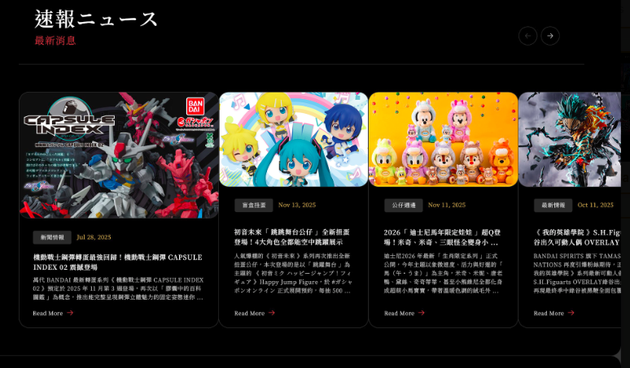
- 結構匹配度★★★★★ 結構幾乎完全一致（橫向多卡 + 右上左右箭頭），可直接套用
- 想做的效果點箭頭時下一張從右側滑入、舊卡從左側滑出（反向亦然）
- 觸發方式使用者點擊 prev / next 箭頭；可選：每 5~7 秒自動播放
- 動畫長度單次切換 400~600ms，
ease-in-out - 位移幅度整列
translateX(±100%)，搭配 opacity 0 → 1 漸入 - 進場動畫區塊進入視窗時，4 張卡可額外做 stagger 滑入（從右邊依序進場）
- 技術方案純 CSS transition + JS 控制 index（最輕量）／或 Swiper.js / Embla Carousel（功能完整）
- Demo/news-carousel-demo.html（待製作）
06
商品推薦 · 進場錯落淡入
scroll-stagger ⚠ 結構不同參考來源
→
我們的對應區塊
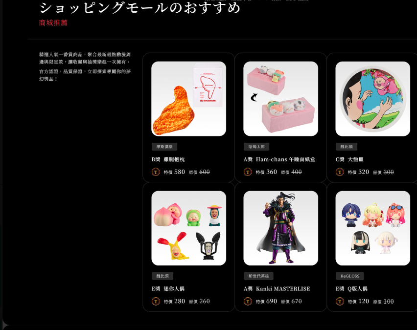
- 結構匹配度★★☆☆☆ avax 是 carousel（可切換），日日欣是 grid（不可切換），不能直接套
- 想做的效果進入視窗時，6 張商品卡從左往右逐張錯落滑入（保留「從左滑入」感）
- 觸發方式scroll-driven，section 進入視窗 30% 時開始
- 進入方向每卡從
translateX(-60px → 0)+ opacity0 → 1 - Stagger 順序依 row-by-row 從左到右，間隔
0.08~0.12s - 緩動曲線
ease-out或 GSAPpower2.out - 技術方案CSS
animation-timeline: view()+nth-childdelay／或 GSAP ScrollTrigger +stagger
- ⚠ 不建議把 grid 改成 carousel（會降低資訊密度，使用者需多次點擊才能看完 6 個商品）
- 建議方向保留 grid 佈局，動畫只用於進場（一次性），不要做切換型互動
07
內頁標題 · 日文字動態效果
typography ✓ 可做參考來源
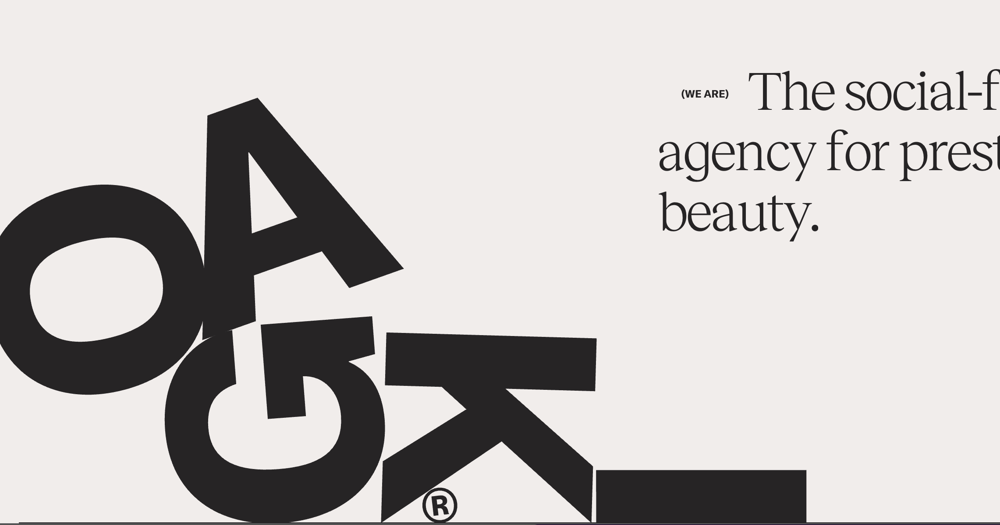
→
我們的對應區塊
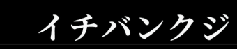
- 關鍵釐清ogaki 的衝擊感來自字體很粗大 + 字母獨立排版；我們的明朝體 + 細字，要達到同等衝擊感需要先放大字體
- 共同做法把標題用 SplitText（或手動
<span>拆字）拆成單字元，每個字單獨控制 transform
- ▸ 主推方案逐字掉落 + 旋轉歸位：6 個字（イ チ バ ン ク ジ）依序從上方掉下、各帶不同初始旋轉角，落地後歸 0；類似 ogaki 那種「每字獨立」感
- 動畫長度整段 1.2~1.5 秒，每字 stagger 0.08~0.1s
- 緩動曲線
cubic-bezier(0.34, 1.56, 0.64, 1)（彈跳感）或 GSAPback.out(1.7) - 觸發頁面進場時自動播放；也可設為「scroll 進入視窗才播放」
- 技術GSAP
SplitText+stagger（最快）／純 CSS@keyframes+nth-child - CodePenSplitText with advanced staggers ↗ · GSAP Split Text 基礎 ↗
- ▸ 替代 A遮罩 reveal：用
clip-path從中央向兩側展開揭幕（最容易、最優雅，適合明朝體標題）
CodePen：Revealing Text using clip-path ↗ · clip-path reveal ↗ - ▸ 替代 B逐字淡入 + 微浮動：每字 opacity 0 → 1 + 微小
translateY，落定後上下浮動 1~2px（細緻、低調）
CodePen：SplitText 字元 stagger ↗ · Splitting.js CSS vars ↗ - ▸ 替代 CMagnetic hover：滑鼠靠近某字時，該字會被「吸引」微位移（互動性強，但只在 hover 時觸發）
CodePen：GSAP magnetic hover ↗ · Text scroll + hover + clip ↗ - 推薦排序主推 ≈ 替代 A > 替代 B > 替代 C（看設計風格走向決定）
範例：Hover 動畫 · 區塊過場 · Loading · Cursor 效果 · 商品翻牌 …